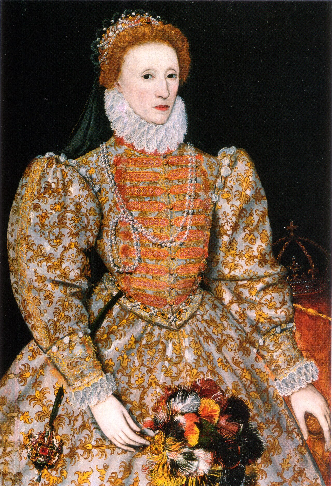

The "Darnley Portrait" of Queen Elizabeth I of England who died without an heir, allowing her cousin, James I, to inherit the throne.
Queen Elizabeth I of England died without an heir, so her cousin, King James I, inherited the English crown. King James I ruled both England and Scotland because of this. During this period, there were many concerns about the legitimacy surrounding the succession of the English throne as well as assassination attempts against King James I.
The "Darnley Portrait" of Queen Elizabeth I of England who died without an heir, allowing her cousin, James I, to inherit the throne.
King James I strongly believed in witchcraft, causing him to persecute many women as witches.

This image shows King James I ordering his assistant to require the beating and torture of the witches found during his witch hunts.
Macbeth implements the ideas of the divine right of kings from this period of time, demonstrating how illegitimate rulers can lead to disastrous consequences